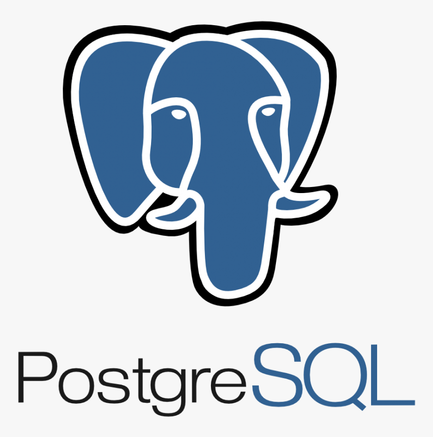

Manual Processes Are Limiting
Your Growth Potential
Service businesses plateau when operational complexity outgrows their systematic capabilities. Revenue stagnates while team capacity becomes the bottleneck.
We design systematic operations that remove growth limitations - transforming manual coordination into scalable processes that work independently of individual effort.
Serving select service businesses nationwide
↓


